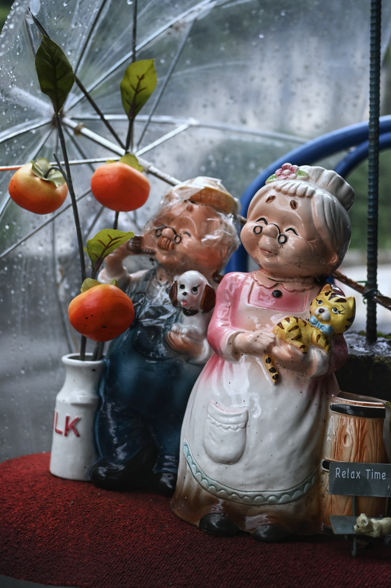

인해전술
사진부 합숙 마지막 날이다. 각 학교 참가자들의 사진을 모아 투표를 하여 과제 부문과 자유 부문의 우수 작품을 3장씩 총 6장이 뽑혔다.
수상[受賞]한 사람들을 보면 역시나 가장 참가 인원수가 많은 학교의 학생이 대부분이었다. 물론 수상한 사진 중에 반박할 수 없을 정도로 훌륭한 작품도 있었지만, '그냥 같은 학교 학생들끼리 표 몰아줘서 뽑힌거 아니야?'라는 생각이 드는 작품들이 많았다.
문제는, 작년에도 이번과 완전히 똑같은 레파토리였다는 것이다. 거의 우승이 확정되었다고 봐도 될 정도로 압도적인 사진이 있었음에도 불구하고 수상한 사람들은 가장 인원수가 많은 학교의 학생들이었다.
애초에 사진의 우수성이 100% 일반인의 투표로 결정된다는 것 자체가 납득이 되지 않는다. 물론 전문 사진 작가 등의 심사위원을 초대하는 것은 비용적인 문제가 크기 때문에 어쩔 수 없다는 생각도 들지만, 적어도 "인원수로 밀어붙일 수 있는 시스템"에 대한 대책은 마련할 필요가 있었다. 하지만 그렇다고 해서 이 밖에 어떤 대안이 있었을지 생각해봐도 그럴듯한 해결책이 떠오르지 않는 것도 사실이다.
그럼에도 "작품성이 뛰어난 사진"과 "득표수가 많은 사진"이 의미하는 바가 다르다는 점에 대한 입장은 여전하다.
참고로, 내가 제출한 사진은 과제/자유 순서대로 아래 2장이다(파일 크기를 위해 화질은 다소 압축되어있다). 그러고보니 사진 페이지를 전혀 업데이트하지 않고 있는데, 조만간 정리를 좀 해야할 것 같다.
